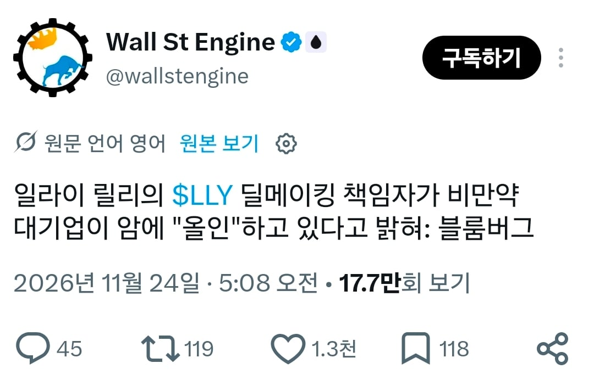

마운자로로 비만을 정복했으니, 이제 모든 역량을 총동원해서 암을 정복할 것이라고 함
마운자로 같은 딸깍 암 치료제가 나오면 인류사 대혁명일듯

마운자로로 비만을 정복했으니, 이제 모든 역량을 총동원해서 암을 정복할 것이라고 함
마운자로 같은 딸깍 암 치료제가 나오면 인류사 대혁명일듯
그건 위고비
치매도 꼭 나왔음 좋겠다
치매 제발 치매 제발
요즘 최신 항암치료제가 돈만 있으면 뭐 거의 완치 확정 수준이라던데
신약 같은거임??? 그런거 못들었는뎅.....
3세대 항암치료제가 존나 비싼데 효과는 좋데
중입자 어쩌구 아니냐
키트루다
진짜 노벨상 아님?
치매도 꼭 정복 되었음 좋겠음.... 치매도 한 가정이 파괴되고 본인을 잃어버리는 제일 슬픈병 같음... 큰엄마도 치매이신것 같은데 점점 악화되닌까 진짜 강제 입원이 필요할 것 같다고도 생각이 들고...
치매약좀 진짜 ㅠㅠ
치매원인이정확히뭐지?
어디전선이끊기는건가???
릴리새끼들 불량 마운자로 교환하는거 신청접수 지금 4일째 안해주고있는데 CS나 신경써라.. ㅈㄴ 팔아놓고 책임은 안지누..
그건 약받은 약국이나 병원에다 교환해달라하면 되지 않나? 구입처에서도 교환해주자나
구매한 약국에 문의하니까 당장에 교환 안돼고, 불량 약은 약국에 맡겨놓고 구매자가 직접 릴리에 연락해서 교환신청 넣고 약국으로 새 약물 보내주면 약국에서 나한테 연락줘서 준다네. 근데 직접 릴리에 연락을 하는데 상담원연결은 하루종일 안돼고, 전화예약접수했는데 4일동안 연락안줌.
암->치매->탈모까지 먼저 성공하는 제약사 나오면 시총 전세계 부 절반이상 달성 가능하냐
비아그라는 심장질환 치료제 만들려다 나왔고 마운자로도 원래가 비만치료제 목표였던게 아니었는데.
암 치료를 목표로 하면, 다른 치료제가 나오겠네
특정 암세포를 조지는 mRNA 가위 개발하다가 치매유발 세포 정복 제발
잘한다 잘해!
치매도 제발
암치료제나오면
암보험 들은사람은
암진단금 몇천받고 그후 딸깍 치료받고 개꿀아니냐??
보험약관 및 보상금액을 지들맘대로 바꿀순없잖아?
주식올려달랍니다
그냥 불로불사좀 ㅋㅋㅋ
영구 시력손실문제땜에 유럽하고 북미 규제 들어가는거 아니었나?